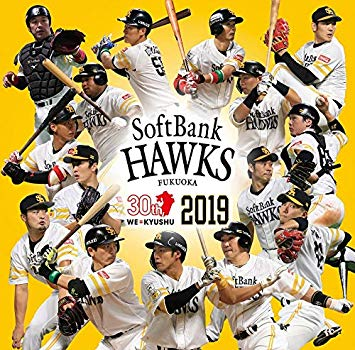

平山の趣味のページ
乃木坂４６
乃木坂４６とは、AKB48公式ライバルとして結成したアイドルグループです。
グループ名の「乃木坂」は、最終オーディション会場の「SME乃木坂ビル」に由来します。
「46」の由来に関しては、「AKB48より人数が少なくても負けないという意気込み（秋元康氏）」から。
読み方は”ノギザカフォーティーシックス”。また、メンバーは全国規模のオーディションにより、
38,934人の応募の中から選ばれました。
福岡ソフトバンクホークス

福岡ソフトバンクホークス（ふくおかソフトバンクホークス、英語: Fukuoka SoftBank Hawks）は、日本のプロ野球球団。パシフィック・リーグに所属している。現在の監督は工藤公康、法人の会長は王貞治が務めている。
福岡県をフランチャイズとし、福岡市中央区にある福岡ヤフオク!ドームを本拠地、北九州市小倉北区にある北九州市民球場を準本拠地としている。また二軍（ウエスタン・リーグ所属）の本拠地は、筑後市津島にあるHAWKSベースボールパーク筑後を使用している。
リンク